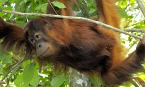
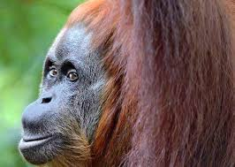

Fun Facts
The Sumatran orangutan is almost exclusively arboreal, living among the trees of tropical rainforests. Females virtually never travel on the ground and adult males do so rarely. Sumatran orangutans are reported to have closer social ties than their Bornean cousins. This has been attributed to mass fruit on fig trees, where groups of Sumatran orangutans can come together to feed. Adult males are typically solitary while females are accompanied by offspring.
Why does it matter?
Orangutans are frugivores and play a vital role in the dispersal of seeds over a huge area. If orangutans were to disappear, so would several tree species, especially those with larger seeds.The forests orangutans call home are a vital source for fresh water. Rivers and streams from these forests provide local communities with water for drinking, cooking, bathing, irrigation and hydroelectricity. The forests are also a valuable source for wildlife products like honey and rattan.
 Threats
Orangutan habitat in north Sumatra is being lost at an extremely high rate, mainly due to fire and conversion of forests to oil palm plantations and other agricultural development. This species depends on high-quality forests. Widespread forest fires, many set deliberately to clear land for plantations, are becoming a regular disaster. Not only do fires destroy vast areas of orangutan habitat, but thousands of these slow-moving apes are thought to have burned to death, unable to escape the flames.
Despite legal protection in Indonesia since 1931, orangutans are still captured from the wild and kept in households as status symbols. In some areas orangutans are hunted for food. Investigations by TRAFFIC, the global wildlife monitoring network, shows that lack of law enforcement against this illegal trafficking poses a serious threat to orangutans. Females give birth to just one infant at a time every eight or nine years, making their populations very susceptible to even very low levels of hunting. Experts estimate that even as little as 1% of females lost each year through hunting or other unnatural causes could put a population on an irreversible trajectory to extinction.